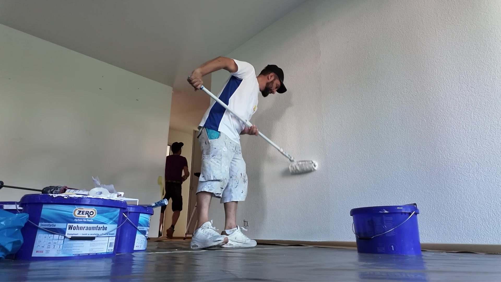

Ob Holz, Beton, Naturstein, Verputz, Metall oder Kunststoff: Wir bearbeiten jede Fassade fachmännisch, mit eigenen Roll- und Fassadengerüsten.

Eine neue Fassade ist für unsere Fachleute eine kreative Herausforderung, die viel Gefühl für das Objekt und seine Umgebung voraussetzt. Wir nehmen uns diese Zeit.
Bevor wir loslegen, zeigen wir Ihnen Ihr Gebäude in verschiedenen Farbvarianten am Bildschirm. So sehen Sie alle Nuancen Ihres zukünftigen Objekts und haben die Qual der Wahl.
Eigene Gerüste, Maler- und Spritzarbeiten, Kunststoffputze, Betonsanierungen sowie Fassadenisolationen und -renovationen: Bei uns bekommen Sie die ganze Fassadenarbeit effizient aus einer Hand.
Wir sorgen mit unserem guten Namen dafür, dass Ihre neue Fassade langlebig und farbbeständig ist und umweltgerechte Materialien zum Einsatz kommen.
Klicken Sie auf einen Farbton und sehen Sie sofort, wie die Fassade wirkt. Genau so erstellen wir professionelle Farbstudien am Computer, mit Ihrem Haus als Vorlage und allen Nuancen ab Bildschirm.
Gewählter Farbton: Sonnengelb
Farbstudie für mein Haus anfragenJa, wir verfügen über eigene Roll- und Fassadengerüste und können dadurch effizient und flexibel arbeiten.
Ja, Fassadenisolationen und -renovationen gehören zu unserem Kerngeschäft.
Ja, wir erstellen Farbstudien am Computer und zeigen Ihnen Ihr Gebäude in verschiedenen Varianten.
Rufen Sie uns an oder schreiben Sie uns. Wir beraten Sie gerne persönlich.